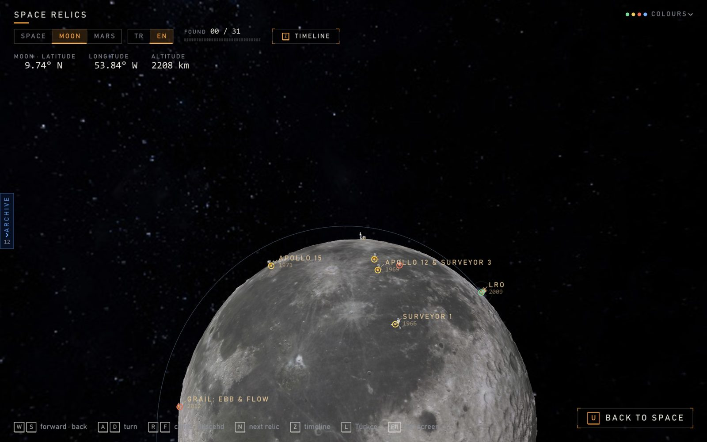
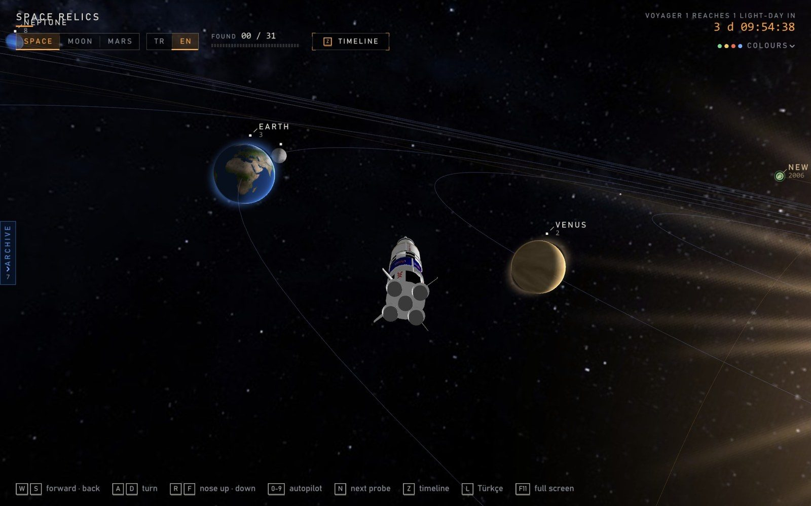
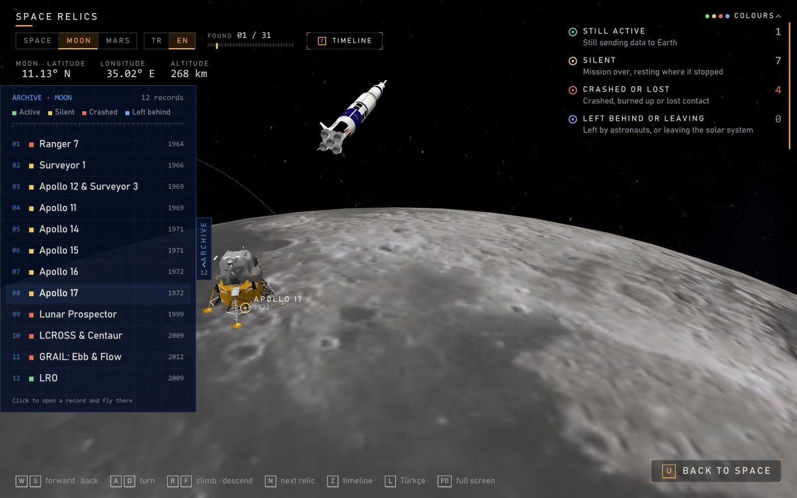
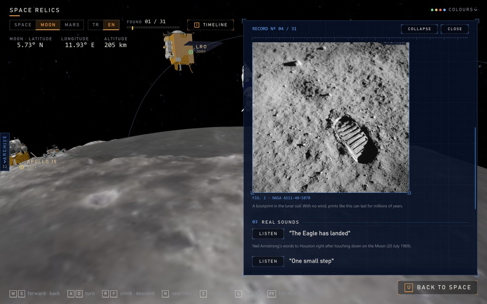
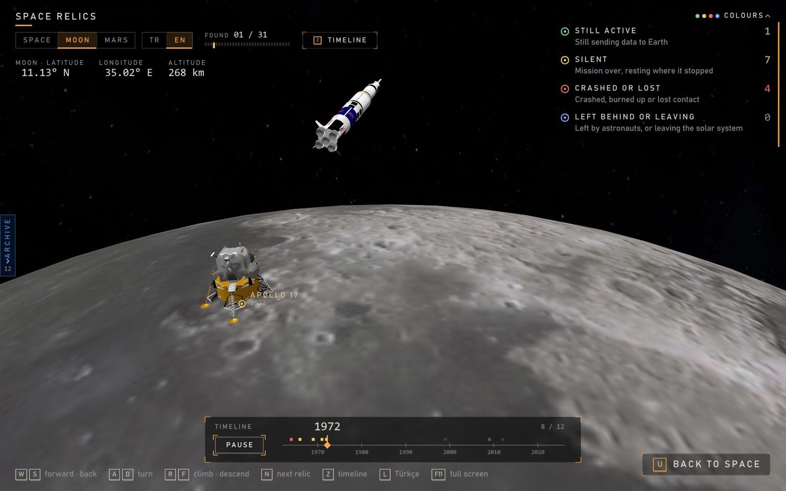
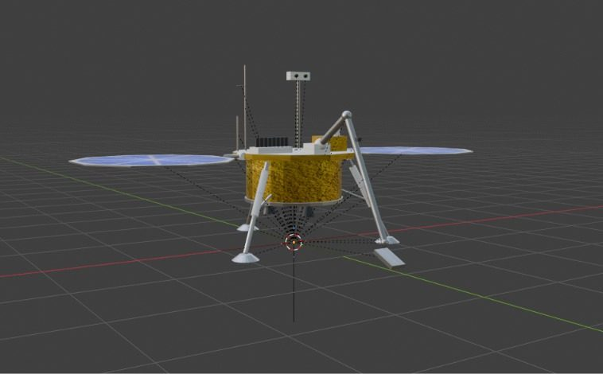

NASA Space Apps Challenge 2026 / Abandoned but Not Forgotten / Denizli
Thirty-one spacecraft finished their missions. They are still out there.
Space Relics is a desktop app for finding them. Fly through the solar system, land on the Moon and Mars, and open the record of every lander, rover and probe we left behind.

The idea
When a mission ends, the news moves on. The hardware does not. Apollo descent stages, silent rovers and probes leaving the solar system are still where we left them.
We wanted to treat them as relics, not debris: objects with a date, a place and a story. So we built a map you explore yourself. You fly, you search, and when you find a spacecraft you open its record.
Every record says what the spacecraft was for, what it found and what is left of it today, with NASA's own photographs and recordings.
How it works

Fly
Steer a rocket with W A S D, or let the autopilot take you to a planet or a probe. Deep-space probes move in real time, and their distance from Earth updates every second.

Land and search
Press E near the Moon or Mars to land. Each spacecraft sits at its real latitude and longitude. Its colour tells you what happened to it: still working, silent, crashed, or left behind on purpose.

Open the record
The record is laid out like an archive file: a catalogue number, a status stamp, a rotating 3D model, photographs, sources, and for some spacecraft the original audio, such as "The Eagle has landed".

Replay the years
Press Z and drag from 1962 to today. Spacecraft appear in the year they arrived, so you can watch sixty years of exploration build up on the surface.
The catalogue
All 31 spacecraft in the app, by where they are, with the year they appear on our timeline.
| No. | Spacecraft | Known for | Where | Year | Status |
|---|
Still working Silent Crashed or lost Left behind or leaving
Where the data comes from
The app runs on NASA open data. We simplified distances and exaggerated heights so they fit on a screen, and we say so in the app.
- Locations, dates, stories
- NASA mission pages. Every record links to its sources.
- 47 photographs
- NASA Image and Video Library
- 7 audio recordings
- NASA audio archive: Apollo 11, Voyager, Cassini, Perseverance.
- Moon terrain
- LRO LOLA laser altimetry, NASA PDS
- Mars terrain
- MGS MOLA laser altimetry, NASA PDS
- 3D models
- NASA 3D Resources, plus two built by our team
- Planet textures
- Solar System Scope (CC BY 4.0)
Drawn and built by us
NASA does not publish a model of every spacecraft. For the Phoenix Mars lander we drew front and side views from NASA photographs, then modelled it in Blender. We did the same for the Lunar Roving Vehicle parked at the Apollo 15, 16 and 17 sites.

Team Kuzgun Aerospace
Efe Dağdeviren
Software, interface, technical drawings
Built and tested the app step by step, designed the interface and drew the reference sketches for our models.
Belinay Nur Öner
Research, data, 3D modelling
Collected and checked the records of all 31 spacecraft, wrote their stories and modelled Phoenix and the Lunar Rover.
Download
| System | Windows 10 / 11, 64-bit |
|---|---|
| Size | About 130 MB, no installation |
| Languages | English, Turkish |
| Internet | Not needed |
- Unzip the file and open UzayHatiralari.exe.
- If Windows shows a warning, choose More info, then Run anyway.
- Press Enter to launch. W A S D to fly, E to land, N for the next spacecraft, Z for the timeline, L to switch language.
Contact
- @kuzgunaerospace